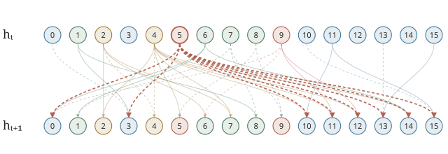

Inside a second-argmax network
Given ten real numbers, return the position of the second largest.
ARC trained a recurrent network to do this with sixteen ReLU neurons and 432 weights. Its example_2nd_argmax() checkpoint achieves about 95.3% accuracy on standard Gaussian inputs. It has no biases:
The largest score selects an input position, indexed from zero. We present a parameter-level circuit account of all sixteen neurons and 432 weights, with pseudocode and exact conditional explanations of candidate writes and rank errors.

- Carriers
- Comparisons
- Carry / record
- Candidate / relay
A write is also feedback
Four comparisons, neurons 1, 6, 7 and 8, measure an arriving input against learned thresholds. Their shared activity and differences contribute to both admission and output scores. Neuron 2 carries maximum-like history; neuron 4 produces a graded record increment. These quantities can depart from the true ranked values.
A stored cutoff produces candidate amplitude in neuron 5. A candidate produced while reading input t tags input t−1; it writes at the following update by inhibiting eight carriers. The carriers transport positional evidence, receive record refill and lose activity to the old candidate. Neuron 9 supplies a separate delayed relay.
Normalize each carrier by the cost of a candidate write. Its update is then:
available = relu(background)
spent = min(available, old_candidate)
carrier_next = available - spentThe background contains transport, record refill, current-input drive and the retained comparison, carry and relay contributions. Limited supply can clip a write. More candidate activity therefore need not produce a proportionally stronger positional signal.
The same carrier flows update an admission base, c, and the learned comparison bounds. A value/query packet and an admission level jointly generate the next candidate cutoff, τ. A write changes both the evidence for its address and the state that regulates later writes.
The sixteen-state pseudocode expands this update, retaining every learned filter and every output contribution. The coordinate map connects its variables to the physical neurons.
One write, three consequences
Hold the other fifteen old activities and the receiving input fixed. Compare retaining a positive candidate with erasing it. If receiving carriers 0, 14 and 15 stay supplied at the larger candidate endpoint, the trained weights guarantee three changes: the tagged row gains against all nine rivals, c increases, and τ decreases. The other thirteen receiving gates may change.
In this example the write arrives at the tenth update, so row 7 is input position 7. The base and cutoff are readings of the resulting state.
Δc Δτ
[0.8,0,0,0,0,0,0,0.2,0,1]. All three carrier reserves hold. Exact bounds.This promotion does not establish that the tagged input is second largest. Here input 7 is below the runner-up at input 0. The write law explains a consequence of admission, not whether that admission is correct.
A false record leaves the maximum ahead
After inputs [1,0], the learned record threshold is about 0.979. An offer near 511/512 activates record neuron 4 even though it is below the existing maximum, 1.
For the full family [1,0,z,0,0,0,0,0,0,0], with z within 1/16384 of 511/512, the network selects maximum position 0 instead of runner-up position 2. At the following update, remove only the old record signal’s contribution to the comparison differences. This repairs the entire family. Removing its common-query contribution leaves the error.
Score 2 − score 0
The true-record control uses z = 513/512. Position 0 is now the correct runner-up. Removing the contrast source reduces its winning margin, while leaving its selection unchanged. The same source helps or hurts according to the history; deleting it is not a general repair.
Evidence and limits
The reproduction kit checks the two claims above with rational arithmetic. It also reconstructs all 432 source coefficients from the circuit program and compares complete score trajectories with the native recurrence. Run the checks.
A larger recorded study matched every predicted choice across 73,728 input, state and parameter edits. Its amended audit passed the technical checks but missed one predeclared coverage promise: all six input edits were certified for 40 of 58 negative-second errors; 41 were required. An earlier audit failed event labels derived from numerical recovery. Both outcomes are retained in the validation record.
This is a computational account with conditional mechanistic explanations. Dense learned calibration filters remain explicit. The account neither classifies every error nor derives an accuracy estimate meeting ARC’s criterion.